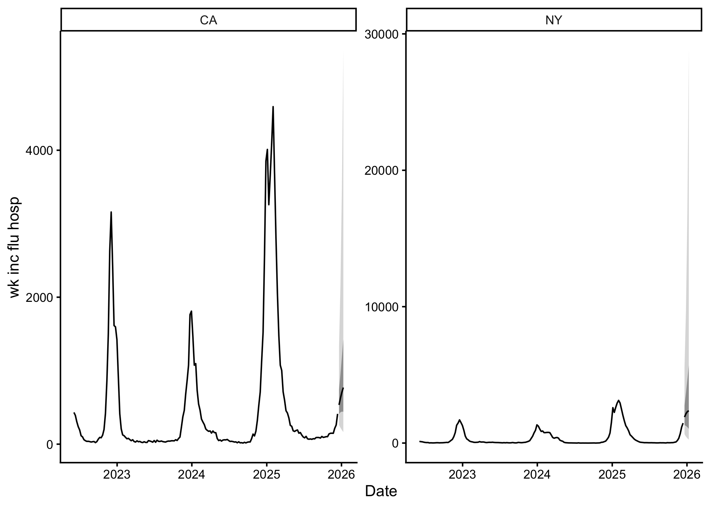

incast is an R package for infectious disease nowcasting and forecasting developed as part of Insight Net, a CDC Center for Forecasting and Outbreak Analytics initiative. It provides a unified framework for generating, evaluating, and operationalising infectious disease forecasts.
It fetches (get_data()) and validates input data (check_data()), optionally applies nowcasting to adjust for reporting delays (get_ncast()), evaluates models by cross-validation (get_cv()), and generates forecasts (get_fcast()).
Installation
You can install the development version of incast from GitHub with:
# install.packages("pak")
pak::pak("ACCIDDA/incast")Quick start
library(incast)
tail(example_data)
#> # A tibble: 6 × 5
#> as_of location target target_end_date observation
#> <date> <chr> <chr> <date> <dbl>
#> 1 2025-12-07 CA wk inc flu hosp 2025-12-06 233
#> 2 2025-12-14 CA wk inc flu hosp 2025-12-06 259
#> 3 2025-12-07 NY wk inc flu hosp 2025-12-06 1160
#> 4 2025-12-14 NY wk inc flu hosp 2025-12-06 1171
#> 5 2025-12-14 CA wk inc flu hosp 2025-12-13 412
#> 6 2025-12-14 NY wk inc flu hosp 2025-12-13 1462
fcast <- example_data |>
check_data() |>
get_ncast() |>
get_cv(eval_start_date = as.Date("2024-10-01")) |>
get_fcast()
#> ℹ Using max_delay = 6 from data
#> ℹ Truncating from max_delay = 6 to 2.
#> ℹ Using max_delay = 6 from data
#> ℹ Truncating from max_delay = 6 to 2.
#> [2026-07-30 21:22:00.375] get_cv: +3.5481 secs
#> [2026-07-30 21:22:03.937] get_fcast: +4.7442 secs
fcast
#> <incast_fcast>
#> Target: wk inc flu hosp
#> Series: 2 (location)
#> Forecast: 2025-12-20 to 2026-01-10 (h = 4)
#> Models: 3 + ENSEMBLE
fcast |> autoplot()
Save to myRespiLens format:
to_respilens(fcast, path = "respilens.json")Citation
If you use incast in your work, please cite the package as follows:
citation("incast")
#> To cite package 'incast' in publications use:
#>
#> Geismar C (2026). _incast: A suite of tools for epidemic
#> forecasting_. R package version 0.0.1,
#> <https://github.com/ACCIDDA/incast>.
#>
#> A BibTeX entry for LaTeX users is
#>
#> @Manual{,
#> title = {incast: A suite of tools for epidemic forecasting},
#> author = {Cyril Geismar},
#> year = {2026},
#> note = {R package version 0.0.1},
#> url = {https://github.com/ACCIDDA/incast},
#> }Acknowledgements
The package relies on the baselinenowcast and fable framework for time series nowcasting and forecasting. It produces forecasts in the hubverse format for submission to the CDC Forecast Hubs.